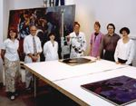

UMCA
formed (1977)


The
Upper Midwest Conservation Association is a nonprofit regional center
for the preservation and conservation of art and artifacts, located
at The Minneapolis Institute of Arts.
Founded in 1977, UMCA is now a full-service art conservation laboratory
and field education service, providing examination and treatment of
works of art on paper, paintings and murals, indoor and outdoor sculpture,
decorative arts, and ethnographic artifacts. It serves a 120-member
organization in Minnesota, Iowa, Wisconsin, South Dakota, and North
Dakota, and corporate collections and private collectors in the Upper
Midwest and elsewhere.